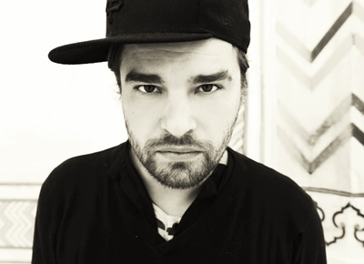

Cesare vs Disorder - Animals Club EP on Stock5
{kind=link}

Italian born, Berlin-based producer Cesare Marchese AKA Cesare vs Disorder continues the solid run here that he’s shown over the past few years, with an extremely well rounded 5-track EP.
The A-side Chacha Malaga represents a heavy opening strike for Animals Club, lining up all the right elements with impressive flair. Warming up with a wonky, uneasy vibe, this is then flipped when the track’s drive is established via a funky, energetic bassline, which grounds the track and offers it some proper dancefloor momentum. And it’s from this foundation that he’s offered the luxury of being able to play around with the psychedelics again, with swirly synths smoothly snaking in and out of the mix. It’s an impeccably delivered slice of spacey deep house.
The A-2 record Saturday in Berlin (but feels like Cuba) sees Marchese loosening the reins to experiment a little more with the atmospherics, though it’s still pinned down with a strong bassline, with the jagged elements giving away to some softer melodies in the latter parts.
Flip over to the B-side, and you’ll hear Marchese moving beyond the Berlin standard issue four-four, for some electro breakbeats, and some suitably detached (and excellent) MCing from Aquarius Heaven.
The closing track Vercelli By Night sees him moving back into more sinister territory, for a darker deep house cut that's unpinned this time from any kind of focused groove, allowing even more room for the spacier elements to play freely amongst each other. A well balanced and cleverly delivered EP, offering the right dose of dancefloor drive and experimentalism at different points across the two sides.
Title: Animals Club EP
Label: Stock5
TracklistChacha MalagaSaturday in Berlin (but feels like Cuba)Animals Club (feat Aquarius Heaven)Vercelli By Night
www.stock5.tv
soundcloud.com/cesare-vs-disorder
Our Rating: 8/10